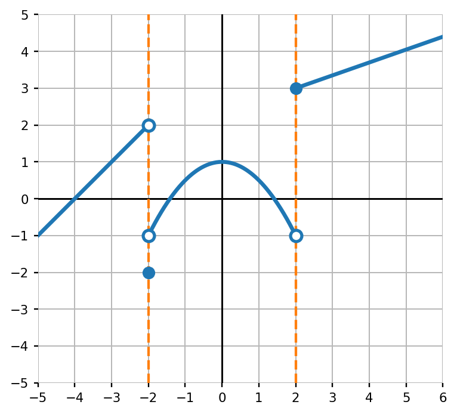
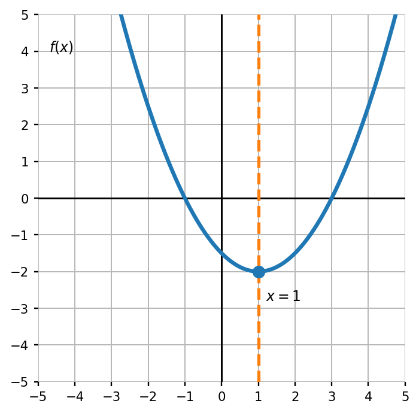
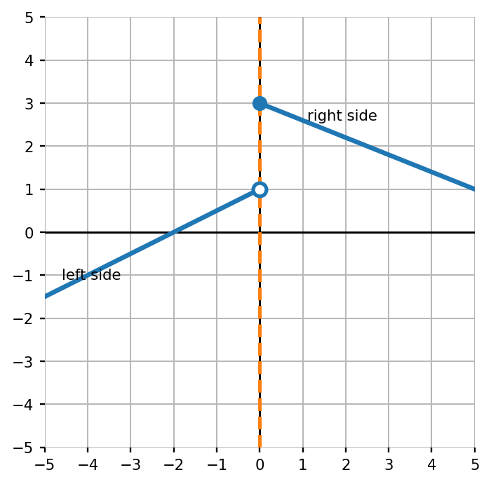
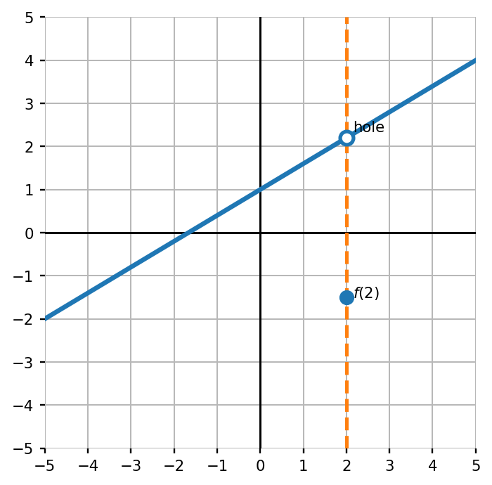
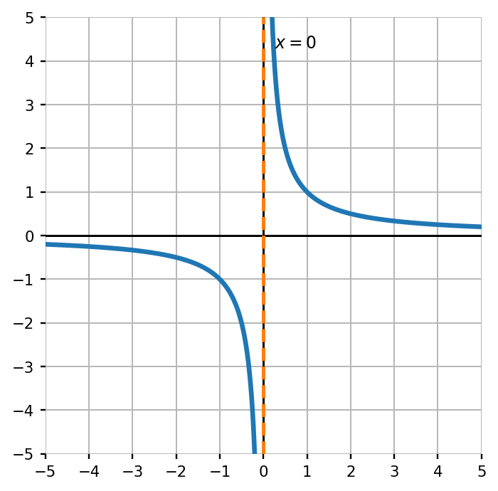

Mathematical idea: A limit asks where the graph is heading. Sometimes the path matters more than the point.
In this section, you will use graphs to compare left-hand behavior, right-hand behavior, and actual function values near holes, jumps, and vertical asymptotes.
Students will analyze limits graphically by examining how functions behave as $x$ approaches a value from the left and right.
I can statements
Later in this section, you will return to the task below. For now, do not solve it. Instead, annotate it individually. Circle anything familiar, underline symbols or directions that seem important, and write notes about what information you think will be needed.
As you annotate, ask yourself: From which side is the graph being approached? What value does the graph seem to approach? Is the actual point on the graph the same as the approached value? What kind of behavior would make a limit fail to exist?
Future Task
A function has several special behaviors shown on one graph.

Directions
Read the introduction aloud with a partner or in a small group. As you read, annotate the text by marking important ideas, circling key vocabulary, and writing short notes about connections, questions, or predictions in the margins.
A limit describes what value a function approaches as the input gets close to a specific number. The key word is approaches. When we ask for a limit, we are watching the graph move toward an $x$-value from nearby points, not simply looking at the point directly above that $x$-value.
Sometimes the limit and the function value are the same. This happens on many smooth, connected parts of graphs. But sometimes the graph has a hole, jump, or separate filled point. In those cases, the value the graph approaches may be different from the actual value of the function.
Limits are read from both sides. The left-hand limit describes what happens as $x$ approaches from values less than the target. The right-hand limit describes what happens as $x$ approaches from values greater than the target. A two-sided limit exists only when those two one-sided limits agree.
Graphical limits help us build language for behavior. Instead of only asking “What is the output?” we ask “What does the graph get close to?” That shift is one of the foundations for later calculus.
Stop and Discuss
The notation $\lim_{x\to a} f(x)$ asks what value $f(x)$ approaches as $x$ gets close to $a$.
Graphical Limit: Follow the graph toward the target $x$-value from nearby inputs. The limit is the $y$-value the graph approaches, if both sides approach the same value.
Use the graph to determine $\lim_{x\to 1} f(x)$.

On a smooth connected graph, $f(x)$ approaches $4$ as $x$ approaches $-3$. What is $\lim_{x\to -3}f(x)$? Explain how you know.
Stop and Discuss
A one-sided limit tells what the graph approaches from only one side of the target input.
Left-hand limit: $\lim_{x\to a^-} f(x)$ follows the graph from the left.
Right-hand limit: $\lim_{x\to a^+} f(x)$ follows the graph from the right.
Use the graph to determine $\lim_{x\to 0^-}f(x)$, $\lim_{x\to 0^+}f(x)$, and whether $\lim_{x\to 0}f(x)$ exists.

A graph approaches $-2$ from the left as $x\to 5$ and approaches $6$ from the right as $x\to 5$. Does $\lim_{x\to 5}f(x)$ exist? Explain.
A hole or separate filled point can make the limit and function value different. The limit depends on where the graph is heading. The function value depends on the filled point.
Use the graph to determine $\lim_{x\to 2}f(x)$ and $f(2)$. Are they equal?

A graph has a hole at $(4,2)$ and a closed point at $(4,-1)$. What are $\lim_{x\to 4}f(x)$ and $f(4)$?
Stop and Discuss
A two-sided limit does not exist when the left-hand and right-hand limits approach different values, or when the graph grows without bound instead of approaching one finite number.
Use the graph to describe the behavior as $x\to 0$. Does $\lim_{x\to 0}f(x)$ exist as a finite number?

A graph approaches $+\infty$ from the left and $-\infty$ from the right as $x\to -3$. Describe why the two-sided limit does not exist as a finite number.
Stop and Discuss
Many graphs combine holes, jumps, point values, and connected pieces. When reading these graphs, slow down and check each target value one side at a time.
Use the graph to answer each question.
Create a quick sketch of a graph where $\lim_{x\to 1}f(x)=3$ but $f(1)=-2$. Explain which part of your sketch shows the limit and which part shows the function value.
Use what you learned to revisit the task from the beginning of the notes.
A function has several special behaviors shown on one graph.